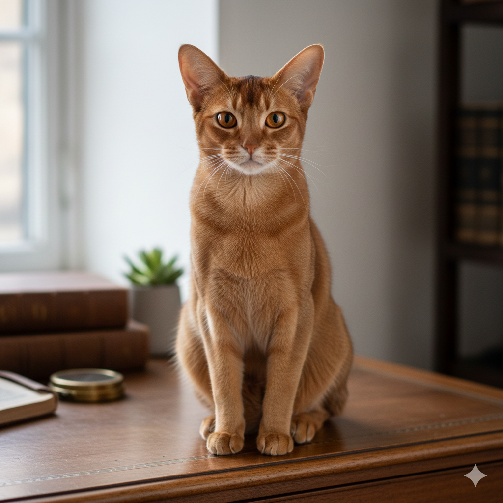
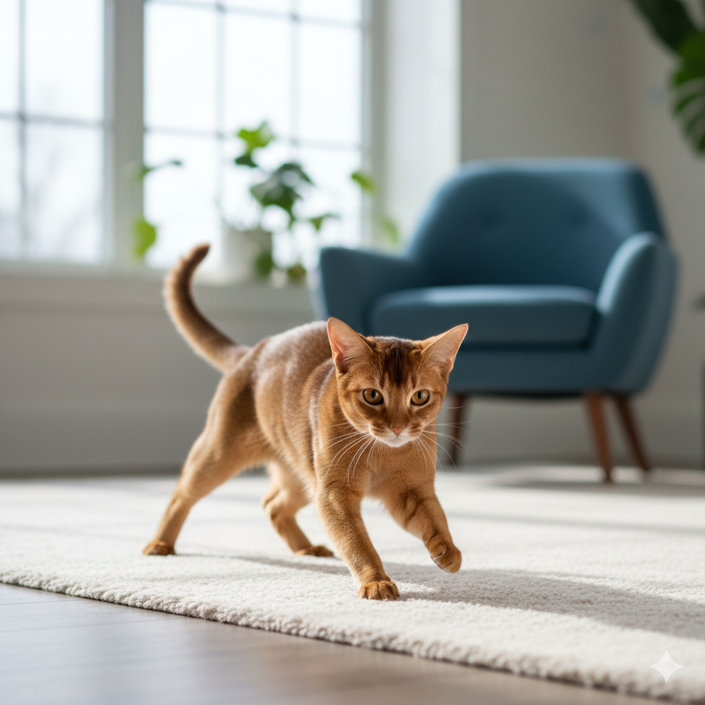
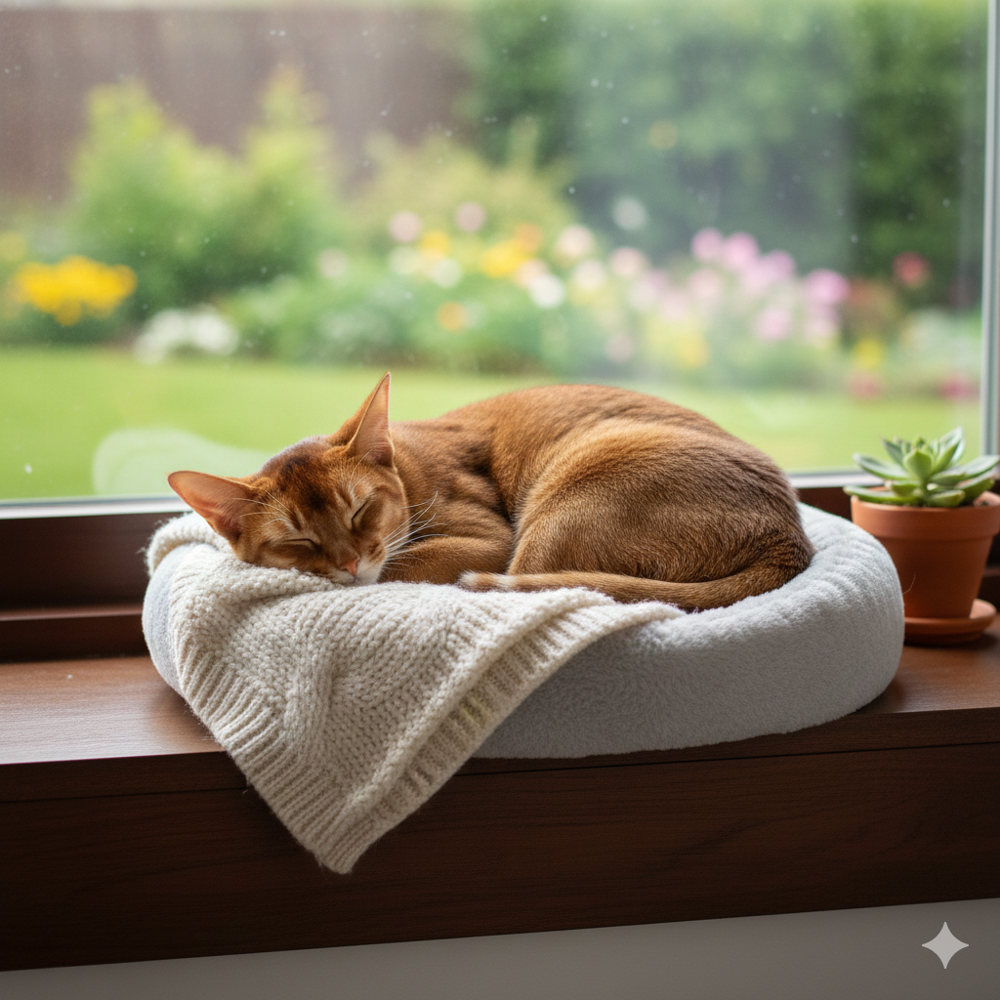

Wiskito
Descripción
Wiskito es un gato de raza Abisinio de 15 meses. Es conocido por su naturaleza juguetona y su pelaje corto y elegante. Le encanta explorar y es muy curioso por naturaleza. Wiskito se lleva bien con otros gatos y es muy cariñoso con las personas.
Historia
Wiskito fue hallado inicialmente en una caja de cartón, al lado de una ruta. El constante paso de autos impedía el paso del felino hacia un lugar seguro, por lo que se lo encontró deshidratado, hambriento y con el pelaje en muy mal estado con heridas leves.
Al cabo de unos días fue encontrado por uno de nuestros especialistas que pasaba por la zona, y lo trajo a nuestra veterinaria donde le pudimos dar atención inmediata, tratando especialmente sus heridas y desparasitándolo.
Información médica
Tiene todas las vacunas al día (Vacuna Desparacitaria, Vacuna Trivalente, Vacuna Leucemia Felina, Vacuna Rabia). Necesita cuidados especiales durante unos años en su pelaje por el estado en el que se encontró.
Si estás interesado en adoptar a Wiskito, por favor completa nuestro Formulario de Adopción. Estamos seguros de que Wiskito será una adición maravillosa a tu familia.